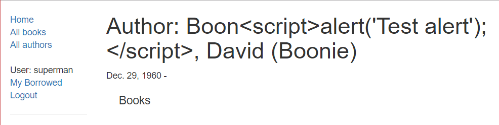

Protecting user data is an essential part of any website design. We previously explained some of the more common security threats in the article Web security — this article provides a practical demonstration of how Django's in-built protections handle such threats.
| Prerequisites: | Read the Server-side programming "Website security" topic. Complete the Django tutorial topics up to (and including) at least Django Tutorial Part 9: Working with forms. |
|---|---|
| Objective: | To understand the main things you need to do (or not do) to secure your Django web application. |
The Website security topic provides an overview of what website security means for server-side design, and some of the more common threats that you should protect against. One of the key messages in that article is that almost all attacks are successful when the web application trusts data from the browser.
The single most important lesson you can learn about website security is to never trust data from the browser. This includes GET request data in URL parameters, POST data, HTTP headers and cookies, user-uploaded files, etc. Always check and sanitize all incoming data. Always assume the worst.
The good news for Django users is that many of the more common threats are handled by the framework! The Security in Django (Django docs) article explains Django's security features and how to secure a Django-powered website.
Rather than duplicate the Django documentation here, in this article we'll demonstrate just a few of the security features in the context of our Django LocalLibrary tutorial.
XSS is a term used to describe a class of attacks that allow an attacker to inject client-side scripts through the website into the browsers of other users. This is usually achieved by storing malicious scripts in the database where they can be retrieved and displayed to other users, or by getting users to click a link that will cause the attacker’s JavaScript to be executed by the user’s browser.
Django's template system protects you against the majority of XSS attacks by escaping specific characters that are "dangerous" in HTML. We can demonstrate this by attempting to inject some JavaScript into our LocalLibrary website using the Create-author form we set up in Django Tutorial Part 9: Working with forms.
python3 manage.py runserver).http://127.0.0.1:8000/catalog/author/create/).<script>alert('Test alert');</script>.This is a harmless script that, if executed, will display an alert box in your browser. If the alert is displayed when you submit the record then the site is vulnerable to XSS threats.
alert() should not be run. Instead the script is displayed as plain text.If you view the page HTML source code, you can see that the dangerous characters for the script tags have been turned into their harmless escape code equivalents (e.g. > is now >)
<h1>Author: Boon<script>alert('Test alert');</script>, David (Boonie) </h1>
Using Django templates protects you against the majority of XSS attacks. However it is possible to turn off this protection, and the protection isn't automatically applied to all tags that wouldn't normally be populated by user input (for example, the help_text in a form field is usually not user-supplied, so Django doesn't escape those values).
It is also possible for XSS attacks to originate from other untrusted source of data, such as cookies, Web services or uploaded files (whenever the data is not sufficiently sanitized before including in a page). If you're displaying data from these sources, then you may need to add your own sanitisation code.
CSRF attacks allow a malicious user to execute actions using the credentials of another user without that user’s knowledge or consent. For example consider the case where we have a hacker who wants to create additional authors for our LocalLibrary.
Obviously our hacker isn't in this for the money! A more ambitious hacker could use the same approach on other sites to perform much more harmful tasks (e.g. transfer money to their own accounts, etc.)
In order to do this, they might create an HTML file like the one below, which contains an author-creation form (like the one we used in the previous section) that is submitted as soon as the file is loaded. They would then send the file to all the Librarians and suggest that they open the file (it contains some harmless information, honest!). If the file is opened by any logged in librarian, then the form would be submitted with their credentials and a new author would be created.
<html>
<body onload='document.EvilForm.submit()'>
<form action="http://127.0.0.1:8000/catalog/author/create/" method="post" name='EvilForm'>
<table>
<tr><th><label for="id_first_name">First name:</label></th><td><input id="id_first_name" maxlength="100" name="first_name" type="text" value="Mad" required /></td></tr>
<tr><th><label for="id_last_name">Last name:</label></th><td><input id="id_last_name" maxlength="100" name="last_name" type="text" value="Man" required /></td></tr>
<tr><th><label for="id_date_of_birth">Date of birth:</label></th><td><input id="id_date_of_birth" name="date_of_birth" type="text" /></td></tr>
<tr><th><label for="id_date_of_death">Died:</label></th><td><input id="id_date_of_death" name="date_of_death" type="text" value="12/10/2016" /></td></tr>
</table>
<input type="submit" value="Submit" />
</form>
</body>
</html>
Run the development web server, and log in with your superuser account. Copy the text above into a file and then open it in the browser. You should get a CSRF error, because Django has protection against this kind of thing!
The way the protection is enabled is that you include the {% csrf_token %} template tag in your form definition. This token is then rendered in your HTML as shown below, with a value that is specific to the user on the current browser.
<input type='hidden' name='csrfmiddlewaretoken' value='0QRWHnYVg776y2l66mcvZqp8alrv4lb8S8lZ4ZJUWGZFA5VHrVfL2mpH29YZ39PW' />
Django generates a user/browser specific key and will reject forms that do not contain the field, or that contain an incorrect field value for the user/browser.
To use this type of attack the hacker now has to discover and include the CSRF key for the specific target user. They also can't use the "scattergun" approach of sending a malicious file to all librarians and hoping that one of them will open it, since the CSRF key is browser specific.
Django's CSRF protection is turned on by default. You should always use the {% csrf_token %} template tag in your forms and use POST for requests that might change or add data to the database.
Django also provides other forms of protection (most of which would be hard or not particularly useful to demonstrate):
<iframe> controlled by the attacker. Django contains clickjacking protection in the form of the X-Frame-Options middleware which, in a supporting browser, can prevent a site from being rendered inside a frame.SECURE_PROXY_SSL_HEADER can be used to check whether content is secure, even if it is incoming from a non-HTTP proxy.SECURE_SSL_REDIRECT is used to redirect all HTTP requests to HTTPS.SECURE_HSTS_SECONDS and SECURE_HSTS_INCLUDE_SUBDOMAINS or on the Web server.SESSION_COOKIE_SECURE and CSRF_COOKIE_SECURE to True. This will ensure that cookies are only ever sent over HTTPS.ALLOWED_HOSTS to only accept requests from trusted hosts.There are many other protections, and caveats to the usage of the above mechanisms. While we hope that this has given you an overview of what Django offers, you should still read the Django security documentation.
Django has effective protections against a number of common threats, including XSS and CSRF attacks. In this article we've demonstrated how those particular threats are handled by Django in our LocalLibrary website. We've also provided a brief overview of some of the other protections.
This has been a very brief foray into web security. We strongly recommend that you read Security in Django to gain a deeper understanding.
The next and final step in this module about Django is to complete the assessment task.
{{PreviousMenuNext("Learn/Server-side/Django/Deployment", "Learn/Server-side/Django/django_assessment_blog", "Learn/Server-side/Django")}}